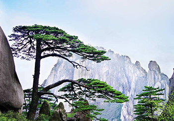

2017年黄山自助旅游特别攻略
发表于2017年2月2日-共有-1评论
随着西海大峡谷和天都峰的开放，黄山旅游也进入了旺季。想在一天时间内玩好黄 山(尤其是一天内穿越西海大峡谷再登天都峰)实在是不太可能的，时间和体力都够呛。想住宿 山上但山上住宿价格太高，2017年价格调整后山上酒店住宿费用大幅提高，而且住宿环境很一般 山上饭菜贵且不一定合胃口。有什么好办法吗?很多游客可能不知道，黄山门票其实是可以用两 次的。为此，推出黄山两日游特别攻略。
第一天到的早的朋友，可以先游玩山下景点，如翡翠谷，九龙瀑，西递，宏村等景点。第二天游玩大峡谷，第三天游玩天都峰。